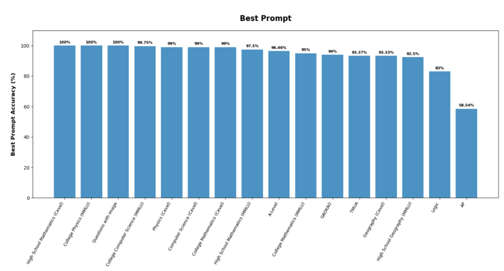

LLM Performance on Standardized Examinations
Compared ChatGPT-5, Gemini 2.5 Pro, ChatGLM-4.5, and DeepSeek-V3 across mathematics, physics, computer science, and geography. The study combines benchmark datasets with custom exam sets to examine reliability, prompt design, and model-specific error patterns.